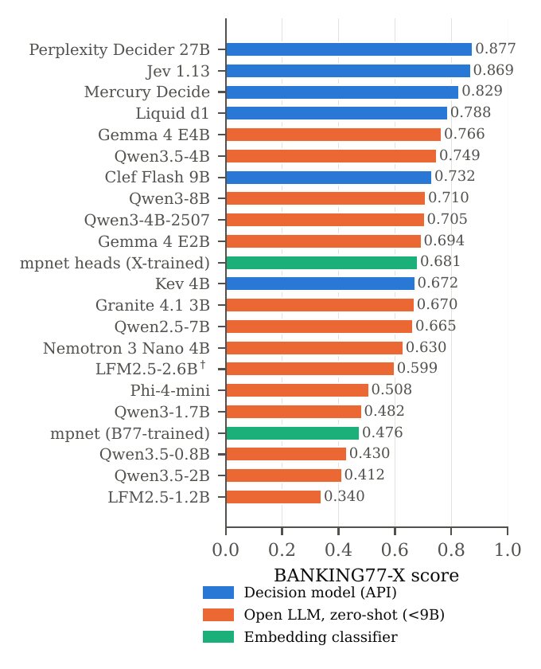
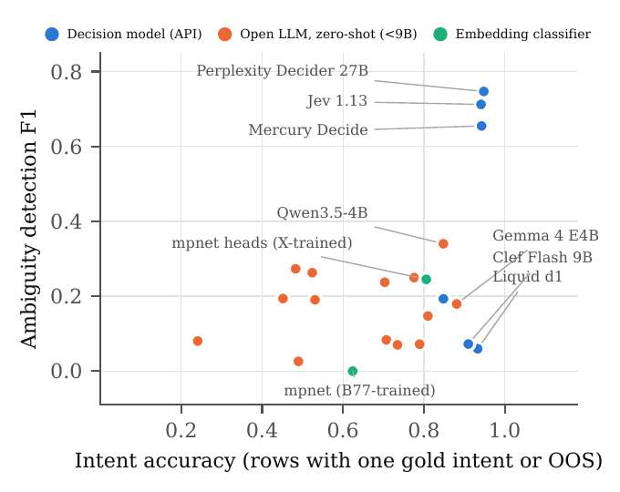
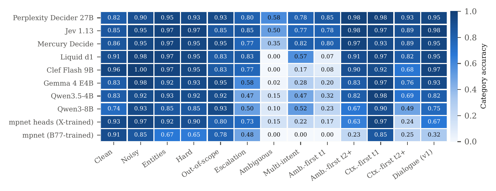

Preprint · November 2026
BANKING77 Is BrokenRethinking a Cornerstone Intent-Detection Benchmark for Enterprise Conversational Agents
Preprint published on Zenodo on 27 November 2026: doi:10.5281/zenodo.24601220.
Abstract
BANKING77 has been the default benchmark for fine-grained intent detection since 2020, and it is now also a launch benchmark for a new class of decision models that return typed, probabilistic answers instead of text. We show that it no longer measures what modern conversational agents need. An audit of all 13,083 queries finds that about 1.1% of labels are clearly wrong and a further ~6% are genuinely ambiguous, so the realistic accuracy ceiling is 96–97%, not 100%. Over half of the test set has a near-paraphrase in the training set, and every reported improvement since 2020 sits inside the benchmark’s ±0.85-point confidence interval. The benchmark is also blind by construction to what enterprise assistants actually face: out-of-scope requests, underspecified requests that require a clarifying question, messages with several requests, multi-turn context and escalation to a human. We introduce BANKING77-X, a 20,381-record extension that keeps the 77 intents, so existing models can be evaluated as they are, corrects the original’s audited labels, and makes these cases first-class: every user turn receives one of 80 categories (77 intents plus ambiguous, multi_intent and out_of_scope), along with a three-level hierarchy, escalation signals and entity spans. All new items were generated by one large language model (Claude Opus) and kept only if a second model of the same family (Claude Sonnet), labelling blind, agreed under strict rules; the data may therefore favour Claude-family readings, and we exclude Claude models from the benchmark. No new item was labelled by a human; a small human spot-check of a stratified sample (36 labels) found no errors. We benchmark 22 systems: six commercial decision models, fourteen open models under 9B parameters run zero-shot, and two embedding classifiers. A classifier trained on BANKING77 labels clean queries with 0.91 accuracy but scores 0.48 on BANKING77-X; the best decision models reach 0.88; the best open model reaches 0.77. Detecting ambiguity is the hardest part: most systems that label intents with 90%+ accuracy almost never recognise that a message is ambiguous.
Key results
| Result | Value reported in the paper |
|---|---|
| Clearly wrong BANKING77 labels | about 1.1% (~140 rows, 95% CI 102–211), including ~36 in the test set |
| Genuinely ambiguous BANKING77 queries | a further ~6%; realistic accuracy ceiling 96–97%, not 100% |
| Train–test leakage | 58% of test items have a training neighbour at cosine ≥0.90 (28.6% at ≥0.95) |
| Statistical resolution of the test set | 95% Wilson interval about ±0.85 points near 94% accuracy; no full-data improvement since 2020 clearly clears it |
| BANKING77-X size | 20,381 records (12,654 train / 1,735 dev / 5,992 test), 80 categories |
| Classifier trained on BANKING77 only | 0.91 category accuracy on clean queries, 0.476 BANKING77-X score |
| Best decision models (BANKING77-X score) | Perplexity Decider 27B 0.877; Jev 1.13 0.869; Mercury Decide 0.829 |
| Best open models under 9B, zero-shot | Gemma 4 E4B 0.766; Qwen3.5-4B 0.749 |
Scores are on test-mini (931 chat records); see Table 4. Total API cost of the benchmark was about $1.84.
1. Introduction
Intent detection is the first decision a task-oriented assistant makes: before it can answer, it has to know what the customer wants. BANKING77 (Casanueva et al. 2020) became the standard yardstick for this decision because it is single-domain, fine-grained (77 intents) and hard for keyword matchers. It is reported in few-shot learning papers (Zhang et al. 2021; Mehri et al. 2020; Mehri and Eric 2021), in embedding leaderboards through MTEB (Muennighoff et al. 2023), in LLM in-context learning studies (Loukas, Stogiannidis, Malakasiotis, et al. 2023; Li et al. 2025), and now in the launch posts of commercial decision models that answer typed questions with calibrated probabilities.
Two things have changed since BANKING77 was released. First, the benchmark has saturated. Full-data accuracy has moved from 93.66 (Casanueva et al. 2020) to 94.42 (Lin et al. 2023) in three years, a gap of 23 test items, and we show that the remaining errors are mostly label noise and genuine ambiguity rather than model failures. Second, the systems being evaluated are no longer stand-alone classifiers. They sit inside chat assistants that must decide what to do with a message: answer it, ask a clarifying question, say it is out of scope, or hand the customer to a person. BANKING77 cannot test any of these decisions: it has no out-of-scope class, no conversation, and forces every query into exactly one label.
This paper makes four contributions.
An audit of BANKING77 covering label noise, the accuracy ceiling and statistical resolution, train–test leakage, taxonomy design, realism and distribution traps (§3). Several of these issues were reported piecemeal before (Ying and Thomas 2022; Zhang et al. 2022; Casanueva et al. 2022); we quantify them together and add new ones.
BANKING77-X, an extension built for modern conversational agents (§4). It keeps the 77 intents and adds 80-way per-turn categories, strict ambiguity and multi-intent labels, 870 dialogues labelled turn by turn, escalation signals, entities and a hierarchy.
A decision-task evaluation protocol with a scenario-weighted score, so that strong accuracy on clean queries cannot hide failures on out-of-scope, ambiguous or conversational input (§5).
A benchmark of 22 systems, including six decision models served through OpenRouter and fourteen recent open models (§6). The whole benchmark cost under $2 in API fees.
2. Background and related work
The BANKING77 dataset.
Casanueva et al. (2020) released BANKING77 together with dual sentence encoders (USE (Cer et al. 2018) and ConveRT (Henderson et al. 2020)) for efficient intent detection. It contains 13,083 customer-service queries for a UK/EU app-only e-money product, split into 10,003 training and 3,080 test queries (40 per intent), across 77 intents. The authors reported 93.66% for fine-tuned BERT and 93.36% for USE+ConveRT in the full-data setting, and released 10- and 30-shot settings to emphasise few-shot learning. The paper does not describe how the queries were collected or labelled.
Work built on BANKING77.
BANKING77 quickly became a standard few-shot benchmark. DialoGLUE (Mehri et al. 2020) included it in a suite of dialogue understanding tasks and carved its own validation set from the training data. Contrastive pre-training and fine-tuning (Zhang et al. 2021) reported 80.86 and 87.20 at 5 and 10 shots, re-running discriminative nearest-neighbour classification (Zhang et al. 2020) as a baseline, and example-driven intent prediction (Mehri and Eric 2021) reached 93.83–94.06 with full data on DialoGLUE’s split. Selective in-context data augmentation (Lin et al. 2023) pushed full-data accuracy to 94.42 with RoBERTa-Large. MTEB (Muennighoff et al. 2023) made BANKING77 one of its classification tasks, so it now feeds every embedding leaderboard; several embedding models train on its training split (Lee et al. 2025; Wang et al. 2024). In the LLM era, Loukas, Stogiannidis, Malakasiotis, et al. (2023; Loukas, Stogiannidis, Diamantopoulos, et al. 2023) compared GPT-3.5, GPT-4 and SetFit (Tunstall et al. 2022) in few-shot settings (83.1 micro-F1 for GPT-4 with three curated examples per class); LongICLBench (Li et al. 2025) used it to test long-context in-context learning; Park et al. (2025) showed that rewriting its label names per query changes in-context accuracy by 2–4 points; and a recent survey of 41 open models up to 9B parameters (Ganesh et al. 2026) found a best zero-shot accuracy of 0.708 from label names alone. InstructDial (Gupta et al. 2022) held it out for zero-shot evaluation.
Known problems and corrections.
Ying and Thomas (2022) applied confident learning (C. Northcutt et al. 2021) and a similarity heuristic to the training split and flagged about 14% of it as possibly mislabelled; the two methods agreed on the corrected label for only 80 of the 127 items both flagged, no flag was checked by hand, the test set was not examined, and no corrected release followed. Zhang et al. (2022) showed that the absence of out-of-scope examples hides a large weakness: holding out 27 intents as in-domain out-of-scope, a 5-shot RoBERTa reached only 43.0% in-scope accuracy and 46.3% out-of-scope precision. Casanueva et al. (2022) criticised single-label, low-diversity intent datasets in general and proposed multi-label, slot-rich NLU++. HINT3 (Arora et al. 2020) and Chrabrowa et al. (2023) contrasted research datasets with imbalanced, overlapping real-world traffic. MTEB’s revised BANKING77 task removed duplicates and very short texts but changed no labels. More broadly, C. G. Northcutt et al. (2021) showed that test-set label errors can reverse model rankings on popular benchmarks.
Decision models.
A recent class of models, served through OpenRouter’s decisions endpoint (OpenRouter 2026), takes a state (text) and typed questions (choice, yes/no, score) and returns probabilities instead of generated text. Examples include TypeSafe Jev (TypeSafe AI 2026), Perplexity Decider (Perplexity AI 2026), Inception Mercury Decide (Inception 2026), Liquid d1 (Liquid AI 2026a), Cloudflare Clef (Chen et al. 2026) and Kev (Palmer 2026). BANKING77 is one of the first benchmarks these models are compared on (Table 1).
| Model | Setup | Score |
|---|---|---|
| Cloudflare Clef | vendor-run Decision Index | 94.2 F1 |
| Fine-tuned BERT (Casanueva et al. 2020) | all 10,003 training examples | 93.7% |
| Jev 1.13 | 24 retrieved examples + label definitions | 92.4% |
| Cloudflare Clef Flash | vendor-run Decision Index | 90.9 F1 |
| Claude Opus 5 | zero-shot, one-line definitions | 84.4% |
| GPT-4 (Loukas, Stogiannidis, Malakasiotis, et al. 2023) | 3-shot, curated examples | 83.1 F1 |
| Jev 1.13 | zero-shot, one-line definitions | 81.0% |
| Jev | vendor-run Decision Index | 79.7 F1 |
3. Auditing BANKING77
We audited the original PolyAI files (unchanged since 2020) with four parallel analyses: published literature, duplicates and leakage, label noise, and taxonomy and evaluation design.
3.1 Label noise
We pooled train and test (13,083 rows), obtained out-of-sample probabilities from 5-fold cross-validation over an ensemble of four inexpensive models (logistic regression on mpnet, bge and e5 sentence embeddings (Reimers and Gurevych 2019), plus TF-IDF; 94.3% accuracy), and ran cleanlab (C. Northcutt et al. 2021; Cleanlab 2026). We then adjudicated 240 rows one by one: all 150 lowest-quality rows plus random samples of the rest. About 1.1% of labels are clearly wrong (~140 rows, 95% CI 102–211), including ~36 in the test set (CI 27–51), and a further ~6% are genuinely ambiguous. cleanlab’s default filter flagged only 0.73% of rows, at 72% precision, and missed about half of the errors among the hardest 150. Errors include “Someone stole my cards!” labelled lost_or_stolen_phone and “How do I top up my card?” labelled transfer_into_account; the same request with different hyphenation receives different labels; and six rows with no intent at all (“what is the word?”) carry gold labels. Because a single, LLM-assisted adjudication pass cannot see errors that the models reproduce, these figures are lower bounds.
3.2 The ceiling and statistical resolution
Table 2 decomposes the 170 test items our ensemble gets wrong. Only about 25 are model errors; the rest are wrong gold labels or genuinely ambiguous queries. The realistic ceiling is therefore 96–97%, and above ~95% a model is mostly learning annotator quirks. With 3,080 test items, the 95% Wilson interval on an accuracy near 94% is about ±0.85 points; two independently reported results must differ by ~1.8 points to be distinguishable, and a paired McNemar test needs 0.65–0.97 points. No published full-data improvement since 2020 clearly clears these bars. A frozen sentence-embedding nearest-neighbour model with no training reaches 92.7%; TF-IDF with logistic regression reaches 89.4%.
| Cause | Test items | Share of test |
|---|---|---|
| Gold label is wrong | ~36 | 1.2% |
| Query is genuinely ambiguous | ~109 | 3.5% |
| Model is actually wrong | ~25 | 0.8% |
3.3 Train–test leakage
There are no exact duplicates, but 11 test queries differ from a training query only by whitespace. With mpnet embeddings, 28.6% of test items have a training neighbour at cosine ≥0.95 and 58% at ≥0.90. TF-IDF with logistic regression scores 97.3% on the near-copied items and 86.2% on the rest; an mpnet 1-nearest-neighbour model scores 97.7% versus 90.7%. The corpus appears crowd-paraphrased from a small set of scenarios: 60.9% of queries have three or more same-intent paraphrases at cosine ≥0.85, and the vocabulary has only 2,564 word types. Embedding models that train on the BANKING77 training split (Lee et al. 2025) and are then scored on its test split in MTEB inherit this leakage.
3.4 Taxonomy
The 77 intents form a grid of five products (card payment, top-up, transfer, cash withdrawal, direct debit) crossed with six statuses (pending, declined or failed, reverted, fee, not recognised, wrong exchange rate). Many cells differ only by a detail customers rarely state: timing, direction of money, or payment rail. The four transfer-status intents alone cause about 80 confusions in cross-validation, with 10-nearest-neighbour label purity of only 0.71–0.73 for three of them (0.85 for transfer_timing). Several label names misdescribe their data: get_physical_card is about where to find the PIN in 99% of training and 100% of test rows, and GPT-4 and GPT-3.5 misclassify 87.5% of those test items (Loukas, Stogiannidis, Diamantopoulos, et al. 2023); apple_pay_or_google_pay is 84% about topping up. Two label strings are malformed (Refund_not_showing_up, reverted_card_payment?). This matters for LLM evaluation, which often classifies from label names: a nearest-label-name probe scores 0% on get_physical_card.
3.5 Realism and scope
Every query is a short, clean, single-turn, in-scope English message with exactly one label. 94.6% start with a capital letter, about 60% end with a question mark, and only about 1% contain a typo. About 1.3% of queries clearly make two requests yet carry one label, and ambiguous queries are forced into a single answer instead of a clarifying question. There is no out-of-scope class, no conversation history, no escalation signal and no entity annotation. The data is dated (six texts say “it’s 2018”), covers one unnamed product, and its collection process is undocumented.
3.6 Distribution traps
At the time of the audit the official Hugging Face loader was a script that datasets 4.0 no longer ran; the dataset has since been converted to Parquet, and our scripts pin the audited revision. Integer label ids depend on the loader: mapping through categories.json gets all 77 wrong, and Python’s sorted() gets 52 wrong because the capital “R” sorts first. The MTEB mirror silently drops 14 rows (9,993 train / 3,076 test) while keeping the 11 cross-split copies, and its metadata lists a different licence (MIT) from the original (CC-BY-4.0). The original baselines cannot be reproduced: the ConveRT models have been taken down and the few-shot subsets are not in the repository.
4. BANKING77-X
4.1 Design principles
BANKING77-X is designed around the decision an enterprise assistant makes on every customer turn.
Compatibility. The 77 intents are kept, with two names normalised, so any BANKING77 model can be evaluated unchanged. Each intent receives a one-line definition written from its training examples; where the name and the data disagree, the definition wins.
One category per turn. Every user turn receives one of 80 categories: one of the 77 intents;
ambiguous(one request that 2–3 intents fit, needing a clarifying question);multi_intent(2–3 separate requests); orout_of_scope.Strict ambiguity. A message is ambiguous only if it is in scope, 2–3 intents each fit fully, a specific missing cue can be named (direction of money, timing, status, channel or product), and one question would resolve it. Being vague but fitting one intent does not count.
Context. Multi-turn dialogues label every user turn, judged with the history up to that turn.
Operations. Each record carries escalation signals (human request, frustration, live fraud, vulnerable customer, formal complaint) and entity spans.
4.2 Contents
Table 3 lists the slices. The original queries are kept with the audit’s corrections applied: 73 labels corrected, 91 queries re-labelled as ambiguous with candidate intents, 6 no-intent queries moved to out-of-scope, 22 duplicates removed and a stratified 10% dev split carved from train (BANKING77 has none). Test rows with a near-copy in train are flagged so they can be excluded. A three-level hierarchy (3 domains, 11 families, 77 intents) plus a cross-cutting request type (how-to, status tracking, problem, fee, fraud or security, account action) supports routing: 59% of ambiguous items resolve to a single family, so a hierarchical system can route them even when the exact intent requires a question.
| Slice | Content | Records |
|---|---|---|
| original | Cleaned BANKING77 queries | 13,061 |
| out-of-scope | 30 unsupported banking topics, chit-chat, near-misses | 1,159 |
| ambiguous | Strictly ambiguous single messages with candidates and a clarifying question | 715 |
| multi-intent | 2–3 separate requests in one message | 644 |
| noisy | Typos, slang, non-native English, terse and rambling messages | 759 |
| entities | Amounts, dates, merchants and 9 more entity types with spans | 763 |
| hard | Minimal pairs, keyword traps, misleading label names | 754 |
| escalation | Human requests, frustration, live fraud, vulnerability, complaints | 482 |
| dialogues (v2) | 870 dialogues, one record per user turn (ambiguous-first, context-first) | 1,555 |
| dialogues (v1) | Context-dependent last turns | 489 |
Dialogues.
The v2 dialogues follow two patterns. In ambiguous-first dialogues the first user turn is ambiguous, the agent asks a clarifying question, and a later turn resolves it, sometimes with a reply that only works in context (“the second one”), sometimes adding a new request, sometimes still unclear, and sometimes pointing to neither candidate. In context-first dialogues the first turn is clear and a later turn depends on it: an elliptical follow-up (“how long will that take?”), an anaphoric shift (“can I cancel it?”, which is cancel_transfer after a transfer and request_refund after a purchase) or a correction.
4.3 Construction and validation
New items were generated by one large language model (Claude Opus) following a written specification, with one generator per slice, and checked automatically for schema, valid labels, entity spans and duplicates. Every generated item was then labelled blind by a different model (Claude Sonnet), which saw only the dialogue, shuffled across slices, with no slice name and no gold label. Items were kept only if the two agreed: exact intent sets for multi-intent items, and for ambiguous items, the second annotator also had to call the message ambiguous and name at least two of the same candidates. Agreement was 96–100% for out-of-scope, noisy, hard and entity items and for the first turns of dialogues, 81% for multi-intent and escalation items and for multi-turn dialogues overall (84–89% on later turns), and only 42–54% for ambiguous items: most rejections were cases where the second annotator judged one candidate clearly likelier, which our strict rule treats as not ambiguous. Generated items within cosine 0.92 of any original query were removed, and splits were assigned by scenario group so that variants never cross splits. No generated item was labelled by a human. As a spot-check, a human reviewed 21 stratified chat samples (13 dialogues and 8 single messages; 36 labels in total) and marked all 36 correct (95% Wilson lower bound 90%).
5. Evaluation protocol
Decision tasks.
Each record is posed as up to five typed questions: route (answer, clarify, out of scope, escalate), category (80 options), intent (77 + none), family (11 + out of scope) and request type. The route follows a fixed policy: escalate on a human request, live fraud, formal complaint or vulnerable customer; otherwise clarify if ambiguous; otherwise out of scope; otherwise answer.
Score.
The BANKING77-X score is the mean, over scenarios, of the mean of route accuracy and category accuracy. Every scenario weighs the same, so strong accuracy on the large clean slice cannot hide failures on out-of-scope, ambiguous or conversational input. We also report the precision, recall and F1 of detecting ambiguous, multi_intent and out_of_scope.
Derived route.
Decision models answer each question independently, and we found that their separately asked route is often inconsistent with their own category (for example, Jev answers “clarify” for 226 of the 678 test-mini rows whose correct route is “answer”). A deployed bot would combine a category with an escalation check, so our headline uses a derived route: escalate if the model says so, otherwise clarify, out of scope or answer according to its own category. We report both.
test-mini.
To keep API costs low we evaluate on test-mini, a stratified 931-record subset of the test split with about 60 records per scenario (150 clean), keeping whole dialogues together. Differences below about 0.03 in the headline score are within noise at this size.
Systems.
Decision models were queried through OpenRouter’s decisions endpoint with the five questions as choice questions and the intent definitions as option descriptions; two further decision models (Together Tev1 and Upstage Solar Decide) refuse questions with more than 20 and 26 options respectively and could not be evaluated. Open models (Qwen2.5, Qwen3 and Qwen3.5 (Qwen Team et al. 2024; Yang et al. 2025; Qwen Team 2026), Gemma 4 (Gemma Team 2026), Granite 4.1 (Granite Team, IBM 2026), Phi-4-mini (Microsoft et al. 2025), Nemotron 3 Nano 4B (NVIDIA 2026, 2025; Taghibakhshi et al. 2025) and LFM2.5 (Liquid AI 2026b, 2026c; Amini et al. 2025)) were run zero-shot on free Kaggle GPUs (2×T4) with vLLM (Kwon et al. 2023) or transformers, greedy decoding and thinking disabled, using one fixed prompt that lists all 80 categories with definitions, the ambiguity and multi-intent rules and the route policy, and asks for a JSON answer (Appendix A). Embedding classifiers are logistic regression on mpnet embeddings (Sentence-Transformers 2021) trained either on BANKING77 only or on BANKING77-X train. Total API cost was about $1.84 and open models used about 13 free GPU hours; both figures cover runs that also included records outside this paper’s chat scope. We exclude Claude models because the data was generated and validated with Claude.
6. Results


| Model | Type | Score | Native | Category | Intent | Dialogue | Amb. F1 | Multi F1 | OOS F1 |
|---|---|---|---|---|---|---|---|---|---|
| Perplexity Decider 27B | D ($0.25) | 0.877 | 0.807 | 0.876 | 0.948 | 0.922 | 0.747 | 0.872 | 0.866 |
| Jev 1.13 | D ($0.33) | 0.869 | 0.736 | 0.873 | 0.941 | 0.893 | 0.712 | 0.838 | 0.857 |
| Mercury Decide | D ($0) | 0.829 | 0.767 | 0.864 | 0.943 | 0.859 | 0.655 | 0.896 | 0.872 |
| Liquid d1 | D ($0.19) | 0.788 | 0.758 | 0.774 | 0.933 | 0.779 | 0.060 | 0.715 | 0.823 |
| Gemma 4 E4B | O | 0.766 | 0.772 | 0.725 | 0.881 | 0.770 | 0.179 | 0.473 | 0.793 |
| Qwen3.5-4B | O | 0.749 | 0.748 | 0.725 | 0.848 | 0.745 | 0.340 | 0.637 | 0.728 |
| Clef Flash 9B | D ($0.75) | 0.732 | 0.624 | 0.739 | 0.910 | 0.709 | 0.072 | 0.318 | 0.815 |
| Qwen3-8B | O | 0.710 | 0.659 | 0.657 | 0.776 | 0.667 | 0.250 | 0.650 | 0.660 |
| Qwen3-4B-2507 | O | 0.705 | 0.682 | 0.646 | 0.810 | 0.675 | 0.147 | 0.177 | 0.744 |
| Gemma 4 E2B | O | 0.694 | 0.386 | 0.636 | 0.789 | 0.663 | 0.072 | 0.433 | 0.730 |
| mpnet heads (X-trained) | C | 0.681 | 0.656 | 0.657 | 0.806 | 0.588 | 0.245 | 0.319 | 0.785 |
| Kev 4B | D ($0.24) | 0.672 | 0.528 | 0.694 | 0.848 | 0.650 | 0.193 | 0.132 | 0.622 |
| Granite 4.1 3B | O | 0.670 | 0.473 | 0.560 | 0.707 | 0.659 | 0.083 | 0.095 | 0.726 |
| Qwen2.5-7B | O | 0.665 | 0.563 | 0.575 | 0.735 | 0.638 | 0.070 | 0.173 | 0.725 |
| Nemotron 3 Nano 4B | O | 0.630 | 0.621 | 0.553 | 0.703 | 0.653 | 0.237 | 0.055 | 0.527 |
| LFM2.5-2.6B† | O | 0.599 | 0.454 | 0.440 | 0.531 | 0.645 | 0.190 | 0.268 | 0.566 |
| Phi-4-mini | O | 0.508 | 0.272 | 0.391 | 0.524 | 0.488 | 0.263 | 0.268 | 0.535 |
| Qwen3-1.7B | O | 0.482 | 0.252 | 0.321 | 0.483 | 0.479 | 0.273 | 0.248 | 0.544 |
| mpnet (B77-trained) | C | 0.476 | 0.476 | 0.490 | 0.624 | 0.354 | 0.000 | 0.000 | 0.286 |
| Qwen3.5-0.8B | O | 0.430 | 0.416 | 0.333 | 0.451 | 0.416 | 0.194 | 0.074 | 0.045 |
| Qwen3.5-2B | O | 0.412 | 0.364 | 0.291 | 0.490 | 0.348 | 0.026 | 0.193 | 0.299 |
| LFM2.5-1.2B | O | 0.340 | 0.108 | 0.193 | 0.241 | 0.321 | 0.080 | 0.048 | 0.286 |
Table 4 lists all 22 systems; Figure 1 summarises them.
Decision models lead, and ambiguity separates them.
Perplexity Decider (0.877) and Jev (0.869) are tied at the top, followed by Mercury Decide (0.829), which is free. All six decision models label single intents with 85–95% accuracy, but only three recognise ambiguity (F1 0.65–0.75); Liquid d1 and Clef Flash almost never answer ambiguous (F1 0.06–0.07) and fall to 0.79 and 0.73 (Figure 1, right).
The best open models are 4B parameters.
Gemma 4 E4B (0.766) and Qwen3.5-4B (0.749) are the strongest open models, ahead of Qwen3-8B (0.710) and the 9B Clef Flash decision model (0.732). Gemma 4 E4B has the highest intent accuracy of any open model (0.881) but rarely says ambiguous (F1 0.18); Qwen3.5-4B detects ambiguity and multiple requests better (F1 0.34 and 0.64). Apart from Gemma 4 E2B (0.694), models of 2B parameters or fewer cannot follow the task reliably and score close to or below the BANKING77-only classifier (0.34–0.48 versus 0.48).
BANKING77 accuracy does not predict BANKING77-X performance.
The classifier trained only on BANKING77 labels clean queries with 0.91 category accuracy, yet its overall score is 0.48. It cannot clarify, escalate or use context, and it scores 0.00 on ambiguous and multi-intent messages (Figure 2). Training the same classifier on the BANKING77-X training split raises its score to 0.68.
Context matters.
On v2 dialogues, the first turn of an ambiguous-first dialogue is the hardest cell for every non-leading system (category accuracy 0.07–0.32 for Liquid d1, Clef Flash, Gemma 4 E4B and Qwen3.5-4B), while the later turns that resolve it are labelled well by the same systems (0.82–0.91).

7. Why BANKING77-X fits enterprise conversational agents
An enterprise assistant is judged on the decision it takes, not on the label it prints. Asking a clarifying question when a request is underspecified, recognising two requests in one message, reading a turn in light of the conversation, declining unsupported requests and escalating vulnerable or defrauded customers are all routine in production and all invisible to BANKING77. BANKING77-X measures each of them, keeps the original 77 intents so results remain comparable, and weights scenarios equally so a single number cannot be earned on clean text alone. Our results show that this changes the ranking: systems separated by a fraction of a point on clean queries are separated by 0.1–0.4 on BANKING77-X.
8. Limitations
LLM-generated data. All new items were written by one model family and filtered by another member of the same family. The data may carry that family’s style, and the filter may favour its readings; we therefore exclude Claude models from the benchmark. No generated item was labelled by a human; the human spot-check covered only 36 labels, which bounds but does not establish label accuracy.
Strict ambiguity is conservative. Requiring both annotators to see the same ambiguity removed more than half of the generated ambiguous items; the remaining set under-represents borderline cases.
One domain. BANKING77-X remains a single English-language retail-banking domain.
test-mini size and prompts. With about 60 records per scenario, small differences are noise. Open-model scores depend on the prompt: our first prompt grouped intents under family headings and several models answered with family names; we report the corrected prompt and keep the first run’s outputs.
Partial correction of the original. Only the 240 audited original rows were corrected; roughly 70 wrong labels probably remain.
9. Future work
Voice.
This paper covers chat. Voice bots add a further layer of difficulty: speech-recognition errors (“top hop” for top up, “pen” for PIN), spoken numbers and amounts, disfluencies and self-corrections, and phone-bot dialogue phenomena such as misrecognition repair, menu-style answers (“the second one”), identity checks mid-call and callers who interrupt. We plan to extend BANKING77-X with a voice channel built from real audio (recorded or synthesised speech passed through production speech recognisers, across accents and noise conditions) and with phone-bot dialogues, so that the same requests can be scored typed and spoken.
Beyond voice.
Further directions are a larger human-labelled test set, a second generator and validator from a different model family, domains beyond retail banking, and full-test evaluation of the strongest systems.
10. Conclusion
BANKING77 served the field well, but it now measures a narrow skill that modern systems have largely mastered, with an error floor set by its own labels. The decisions that matter for deployed assistants (clarify, decline, escalate, use context) are exactly where today’s models differ most, and exactly what BANKING77 cannot see. BANKING77-X keeps BANKING77’s intents and adds those decisions. The data, the audit, the evaluation code and all model outputs are at https://github.com/vamshibobby/banking77-x. The dataset is released under CC-BY-4.0 (the original slice keeps BANKING77’s CC-BY-4.0 licence) and the code under the MIT licence.
Use of AI tools.
The BANKING77-X data was generated and validated with Claude models as described in §4; AI assistance was also used for analysis code and drafting. All results were computed from the data and output files described here. The author designed the study, checked the reported numbers against those files, and takes full responsibility for the content.
Conflicts of Interest.
The author declares no conflicts of interest.
References
- Amini, Alexander, Anna Banaszak, Harold Benoit, et al. 2025. LFM2 Technical Report. https://arxiv.org/abs/2511.23404.
- Arora, Gaurav, Chirag Jain, Manas Chaturvedi, and Krupal Modi. 2020. “HINT3: Raising the Bar for Intent Detection in the Wild.” Proceedings of the First Workshop on Insights from Negative Results in NLP (Online), November, 100–105. https://doi.org/10.18653/v1/2020.insights-1.16.
- Budzianowski, Paweł, Tsung-Hsien Wen, Bo-Hsiang Tseng, et al. 2018. “MultiWOZ - a Large-Scale Multi-Domain Wizard-of-Oz Dataset for Task-Oriented Dialogue Modelling.” Proceedings of the 2018 Conference on Empirical Methods in Natural Language Processing (Brussels, Belgium), 5016–26. https://doi.org/10.18653/v1/D18-1547.
- Casanueva, Iñigo, Tadas Temčinas, Daniela Gerz, Matthew Henderson, and Ivan Vulić. 2020. “Efficient Intent Detection with Dual Sentence Encoders.” Proceedings of the 2nd Workshop on Natural Language Processing for Conversational AI (Online), July, 38–45. https://doi.org/10.18653/v1/2020.nlp4convai-1.5.
- Casanueva, Inigo, Ivan Vulić, Georgios Spithourakis, and Paweł Budzianowski. 2022. “NLU++: A Multi-Label, Slot-Rich, Generalisable Dataset for Natural Language Understanding in Task-Oriented Dialogue.” Findings of the Association for Computational Linguistics: NAACL 2022 (Seattle, United States), July, 1998–2013. https://doi.org/10.18653/v1/2022.findings-naacl.154.
- Cer, Daniel, Yinfei Yang, Sheng-yi Kong, et al. 2018. Universal Sentence Encoder. https://arxiv.org/abs/1803.11175.
- Chen, Michelle, Alex Reneau, and Kevin Flansburg. 2026. Introducing Clef: Our Open-Source Decision Models, and New RL Fine-Tuning Platform. Cloudflare Blog. https://blog.cloudflare.com/clef-decision-models/.
- Chrabrowa, Aleksandra, Tsimur Hadeliya, Dariusz Kajtoch, Robert Mroczkowski, and Piotr Rybak. 2023. “Going Beyond Research Datasets: Novel Intent Discovery in the Industry Setting.” Findings of the Association for Computational Linguistics: EACL 2023 (Dubrovnik, Croatia), May, 925–41. https://doi.org/10.18653/v1/2023.findings-eacl.68.
- Cleanlab. 2026. Cleanlab: Data-Centric AI Package for Machine Learning with Noisy Labels. GitHub repository. https://github.com/cleanlab/cleanlab.
- Coucke, Alice, Alaa Saade, Adrien Ball, et al. 2018. Snips Voice Platform: An Embedded Spoken Language Understanding System for Private-by-Design Voice Interfaces. https://arxiv.org/abs/1805.10190.
- FitzGerald, Jack, Christopher Hench, Charith Peris, et al. 2023. “MASSIVE: A 1M-Example Multilingual Natural Language Understanding Dataset with 51 Typologically-Diverse Languages.” Proceedings of the 61st Annual Meeting of the Association for Computational Linguistics (Volume 1: Long Papers) (Toronto, Canada), July, 4277–302. https://doi.org/10.18653/v1/2023.acl-long.235.
- Ganesh, Parishruthi, Gerry Dozier, and Cheryl Seals. 2026. Selecting Open-Weight Language Models for Zero-Shot Intent Classification: A Systematic Evaluation of 41 Models. https://arxiv.org/abs/2607.27421.
- Gemma Team. 2026. Gemma 4 Technical Report. https://arxiv.org/abs/2607.02770.
- Granite Team, IBM. 2026. Granite 4.1 LLMs: How They’re Built. Hugging Face blog. https://huggingface.co/blog/ibm-granite/granite-4-1.
- Gupta, Prakhar, Cathy Jiao, Yi-Ting Yeh, Shikib Mehri, Maxine Eskenazi, and Jeffrey Bigham. 2022. “InstructDial: Improving Zero and Few-Shot Generalization in Dialogue Through Instruction Tuning.” Proceedings of the 2022 Conference on Empirical Methods in Natural Language Processing (Abu Dhabi, United Arab Emirates), December, 505–25. https://doi.org/10.18653/v1/2022.emnlp-main.33.
- Hemphill, Charles T., John J. Godfrey, and George R. Doddington. 1990. “The ATIS Spoken Language Systems Pilot Corpus.” Speech and Natural Language: Proceedings of a Workshop Held at Hidden Valley, Pennsylvania, June 24-27, 1990. https://aclanthology.org/H90-1021/.
- Henderson, Matthew, Iñigo Casanueva, Nikola Mrkšić, Pei-Hao Su, Tsung-Hsien Wen, and Ivan Vulić. 2020. “ConveRT: Efficient and Accurate Conversational Representations from Transformers.” Findings of the Association for Computational Linguistics: EMNLP 2020 (Online), November, 2161–74. https://doi.org/10.18653/v1/2020.findings-emnlp.196.
- Inception. 2026. Mercury Decide. OpenRouter model page. https://openrouter.ai/inception/mercury-decide.
- Kwon, Woosuk, Zhuohan Li, Siyuan Zhuang, et al. 2023. “Efficient Memory Management for Large Language Model Serving with PagedAttention.” Proceedings of the 29th Symposium on Operating Systems Principles (SOSP ’23), 611–26. https://doi.org/10.1145/3600006.3613165.
- Larson, Stefan, Anish Mahendran, Joseph J. Peper, et al. 2019. “An Evaluation Dataset for Intent Classification and Out-of-Scope Prediction.” Proceedings of the 2019 Conference on Empirical Methods in Natural Language Processing and the 9th International Joint Conference on Natural Language Processing (EMNLP-IJCNLP) (Hong Kong, China), November, 1311–16. https://doi.org/10.18653/v1/D19-1131.
- Lee, Chankyu, Rajarshi Roy, Mengyao Xu, et al. 2025. “NV-Embed: Improved Techniques for Training LLMs as Generalist Embedding Models.” The Thirteenth International Conference on Learning Representations (ICLR). https://arxiv.org/abs/2405.17428.
- Li, Tianle, Ge Zhang, Quy Duc Do, Xiang Yue, and Wenhu Chen. 2025. “Long-Context LLMs Struggle with Long in-Context Learning.” Transactions on Machine Learning Research. https://openreview.net/forum?id=Cw2xlg0e46.
- Lin, Yen-Ting, Alexandros Papangelis, Seokhwan Kim, et al. 2023. “Selective in-Context Data Augmentation for Intent Detection Using Pointwise V-Information.” Proceedings of the 17th Conference of the European Chapter of the Association for Computational Linguistics (Dubrovnik, Croatia), May, 1463–76. https://doi.org/10.18653/v1/2023.eacl-main.107.
- Liquid AI. 2026a. D1. OpenRouter model page. https://openrouter.ai/liquid/d1.
- Liquid AI. 2026b. Introducing LFM2.5: The Next Generation of on-Device AI. Liquid AI blog. https://www.liquid.ai/blog/introducing-lfm2-5-the-next-generation-of-on-device-ai.
- Liquid AI. 2026c. LFM2.5-2.6B: Deploy Agents Everywhere. Liquid AI blog. https://www.liquid.ai/blog/lfm2-5-2-6b.
- Liu, Xingkun, Arash Eshghi, Pawel Swietojanski, and Verena Rieser. 2021. “Benchmarking Natural Language Understanding Services for Building Conversational Agents.” In Increasing Naturalness and Flexibility in Spoken Dialogue Interaction: 10th International Workshop on Spoken Dialogue Systems (IWSDS 2019), vol. 714. Lecture Notes in Electrical Engineering. Springer Singapore. https://doi.org/10.1007/978-981-15-9323-9_15.
- Loukas, Lefteris, Ilias Stogiannidis, Odysseas Diamantopoulos, Prodromos Malakasiotis, and Stavros Vassos. 2023. “Making LLMs Worth Every Penny: Resource-Limited Text Classification in Banking.” Proceedings of the 4th ACM International Conference on AI in Finance (ICAIF ’23), November, 392–400. https://doi.org/10.1145/3604237.3626891.
- Loukas, Lefteris, Ilias Stogiannidis, Prodromos Malakasiotis, and Stavros Vassos. 2023. “Breaking the Bank with ChatGPT: Few-Shot Text Classification for Finance.” Proceedings of the Fifth Workshop on Financial Technology and Natural Language Processing and the Second Multimodal AI for Financial Forecasting (Macao), 74–80. https://aclanthology.org/2023.finnlp-1.7/.
- Mehri, Shikib, and Mihail Eric. 2021. “Example-Driven Intent Prediction with Observers.” Proceedings of the 2021 Conference of the North American Chapter of the Association for Computational Linguistics: Human Language Technologies (Online), June, 2979–92. https://doi.org/10.18653/v1/2021.naacl-main.237.
- Mehri, Shikib, Mihail Eric, and Dilek Hakkani-Tür. 2020. DialoGLUE: A Natural Language Understanding Benchmark for Task-Oriented Dialogue. https://arxiv.org/abs/2009.13570.
- Microsoft, Abdelrahman Abouelenin, Atabak Ashfaq, et al. 2025. Phi-4-Mini Technical Report: Compact yet Powerful Multimodal Language Models via Mixture-of-LoRAs. https://arxiv.org/abs/2503.01743.
- Muennighoff, Niklas, Nouamane Tazi, Loic Magne, and Nils Reimers. 2023. “MTEB: Massive Text Embedding Benchmark.” Proceedings of the 17th Conference of the European Chapter of the Association for Computational Linguistics (Dubrovnik, Croatia), May, 2014–37. https://doi.org/10.18653/v1/2023.eacl-main.148.
- Northcutt, Curtis G., Anish Athalye, and Jonas Mueller. 2021. “Pervasive Label Errors in Test Sets Destabilize Machine Learning Benchmarks.” Proceedings of the Neural Information Processing Systems Track on Datasets and Benchmarks 1. https://datasets-benchmarks-proceedings.neurips.cc/paper/2021/hash/f2217062e9a397a1dca429e7d70bc6ca-Abstract-round1.html.
- Northcutt, Curtis, Lu Jiang, and Isaac Chuang. 2021. “Confident Learning: Estimating Uncertainty in Dataset Labels.” Journal of Artificial Intelligence Research 70: 1373–411. https://doi.org/10.1613/jair.1.12125.
- NVIDIA. 2025. Nemotron 3 Nano: Open, Efficient Mixture-of-Experts Hybrid Mamba-Transformer Model for Agentic Reasoning. https://arxiv.org/abs/2512.20848.
- NVIDIA. 2026. NVIDIA-Nemotron-3-Nano-4B-BF16 Model Card. Hugging Face model card. https://huggingface.co/nvidia/NVIDIA-Nemotron-3-Nano-4B-BF16.
- OpenRouter. 2026. Decisions API: Submit a Decisions Request (POST /Api/Alpha/Decisions). OpenRouter API reference. https://openrouter.ai/docs/api/api-reference/alphadecisions/submit-a-decisions-request.
- Palmer, Jared. 2026. Kev-4B: A Calibrated Decision Model on Qwen3.5-4B. OpenRouter model page. https://openrouter.ai/jaredpalmer/kev-4b.
- Park, Gyutae, Ingeol Baek, Byeongjeong Kim, Joongbo Shin, and Hwanhee Lee. 2025. “Dynamic Label Name Refinement for Few-Shot Dialogue Intent Classification.” Proceedings of the 63rd Annual Meeting of the Association for Computational Linguistics (Volume 2: Short Papers) (Vienna, Austria), July, 41–52. https://doi.org/10.18653/v1/2025.acl-short.3.
- Perplexity AI. 2026. Pplx-Decider-V1-27b. OpenRouter model page. https://openrouter.ai/perplexity/pplx-decider-v1-27b.
- Qwen Team. 2026. Qwen3.5: Towards Native Multimodal Agents. Blog post. https://qwen.ai/blog?id=qwen3.5.
- Qwen Team, An Yang, Baosong Yang, et al. 2024. Qwen2.5 Technical Report. https://arxiv.org/abs/2412.15115.
- Reimers, Nils, and Iryna Gurevych. 2019. “Sentence-BERT: Sentence Embeddings Using Siamese BERT-Networks.” Proceedings of the 2019 Conference on Empirical Methods in Natural Language Processing and the 9th International Joint Conference on Natural Language Processing (EMNLP-IJCNLP) (Hong Kong, China), November, 3982–92. https://doi.org/10.18653/v1/D19-1410.
- Sentence-Transformers. 2021. All-Mpnet-Base-V2. Hugging Face model card. https://huggingface.co/sentence-transformers/all-mpnet-base-v2.
- Taghibakhshi, Ali, Sharath Turuvekere Sreenivas, Saurav Muralidharan, et al. 2025. Nemotron Elastic: Towards Efficient Many-in-One Reasoning LLMs. https://arxiv.org/abs/2511.16664.
- Tunstall, Lewis, Nils Reimers, Unso Eun Seo Jo, et al. 2022. Efficient Few-Shot Learning Without Prompts. https://arxiv.org/abs/2209.11055.
- TypeSafe AI. 2026. Jev 1.13: Structured Decision Model. OpenRouter model page. https://openrouter.ai/typesafe/jev-1.13.
- Wang, Liang, Nan Yang, Xiaolong Huang, Linjun Yang, Rangan Majumder, and Furu Wei. 2024. “Improving Text Embeddings with Large Language Models.” Proceedings of the 62nd Annual Meeting of the Association for Computational Linguistics (Volume 1: Long Papers) (Bangkok, Thailand), August, 11897–916. https://doi.org/10.18653/v1/2024.acl-long.642.
- Yang, An, Anfeng Li, Baosong Yang, et al. 2025. Qwen3 Technical Report. https://arxiv.org/abs/2505.09388.
- Ying, Cecilia, and Stephen Thomas. 2022. “Label Errors in BANKING77.” Proceedings of the Third Workshop on Insights from Negative Results in NLP (Dublin, Ireland), May, 139–43. https://doi.org/10.18653/v1/2022.insights-1.19.
- Zhang, Jianguo, Trung Bui, Seunghyun Yoon, et al. 2021. “Few-Shot Intent Detection via Contrastive Pre-Training and Fine-Tuning.” Proceedings of the 2021 Conference on Empirical Methods in Natural Language Processing (Online; Punta Cana, Dominican Republic), November, 1906–12. https://doi.org/10.18653/v1/2021.emnlp-main.144.
- Zhang, Jianguo, Kazuma Hashimoto, Wenhao Liu, et al. 2020. “Discriminative Nearest Neighbor Few-Shot Intent Detection by Transferring Natural Language Inference.” Proceedings of the 2020 Conference on Empirical Methods in Natural Language Processing (EMNLP) (Online), November, 5064–82. https://doi.org/10.18653/v1/2020.emnlp-main.411.
- Zhang, Jianguo, Kazuma Hashimoto, Yao Wan, et al. 2022. “Are Pre-Trained Transformers Robust in Intent Classification? A Missing Ingredient in Evaluation of Out-of-Scope Intent Detection.” Proceedings of the 4th Workshop on NLP for Conversational AI (Dublin, Ireland), May, 12–20. https://doi.org/10.18653/v1/2022.nlp4convai-1.2.
Appendix A. Prompt for open models
The system prompt (about 2,240 tokens) lists the 77 intents with one-line definitions in alphabetical order and then states:
Classify the customer’s LAST message, using earlier turns of the conversation as context. CATEGORY — exactly one of: one of the 77 intents, if the message makes one clear request; “ambiguous”, if it makes ONE request that 2–3 intents each fit fully and a specific missing detail (direction of money, timing, status, channel, product) would decide between them; “multi_intent”, if it makes 2–3 SEPARATE requests; “out_of_scope”, if none of the 77 intents covers it. ROUTE — “escalate” if the customer asks for a human, reports fraud happening right now, makes a formal complaint or legal threat, or is in a vulnerable situation; otherwise “clarify” if ambiguous; otherwise “out_of_scope”; otherwise “answer”. Reply with ONLY a JSON object: {"category", "intents", "candidate_intents", "route"}.
The user message is the conversation (with a “Channel: chat” header) followed by “Classify the customer’s last message.”
Appendix B. Hierarchy
| Domain | Families |
|---|---|
| cards | card lifecycle; card problems and security; PIN and passcode; virtual cards |
| money movement | card payments; top-up; transfers; cash and ATM; currency exchange |
| account | identity verification; account management |
| out of scope | credit and lending; savings and investing; other products; app features; support and legal; general |
Cite this paper
Atukuri, S. V. (2026). BANKING77 Is Broken: Rethinking a Cornerstone Intent-Detection Benchmark for Enterprise Conversational Agents. Zenodo. https://doi.org/10.5281/zenodo.24601220
@misc{atukuri2026banking77,
author = {Atukuri, Sai Vamshi},
title = {{BANKING77 Is Broken: Rethinking a Cornerstone Intent-Detection Benchmark for Enterprise Conversational Agents}},
year = {2026},
month = nov,
publisher = {Zenodo},
doi = {10.5281/zenodo.24601220},
url = {https://doi.org/10.5281/zenodo.24601220}
}Full text: https://vamshibobby.github.io/papers/banking77-is-broken/ · PDF: https://vamshibobby.github.io/papers/banking77-is-broken/banking77-is-broken.pdf · Code: https://github.com/vamshibobby/banking77-x · Licence: CC BY 4.0